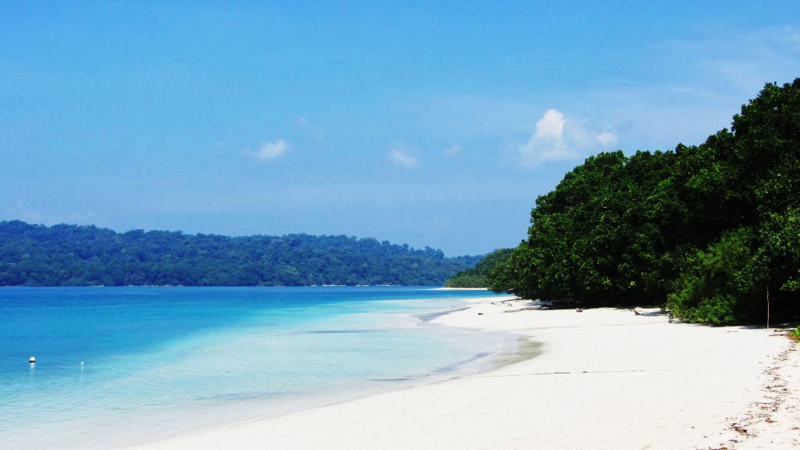
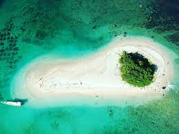
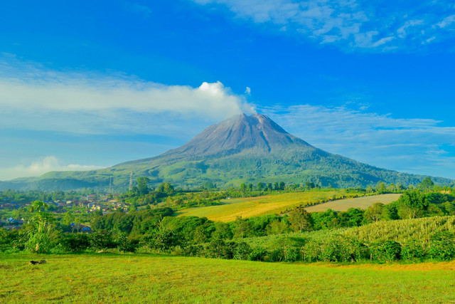
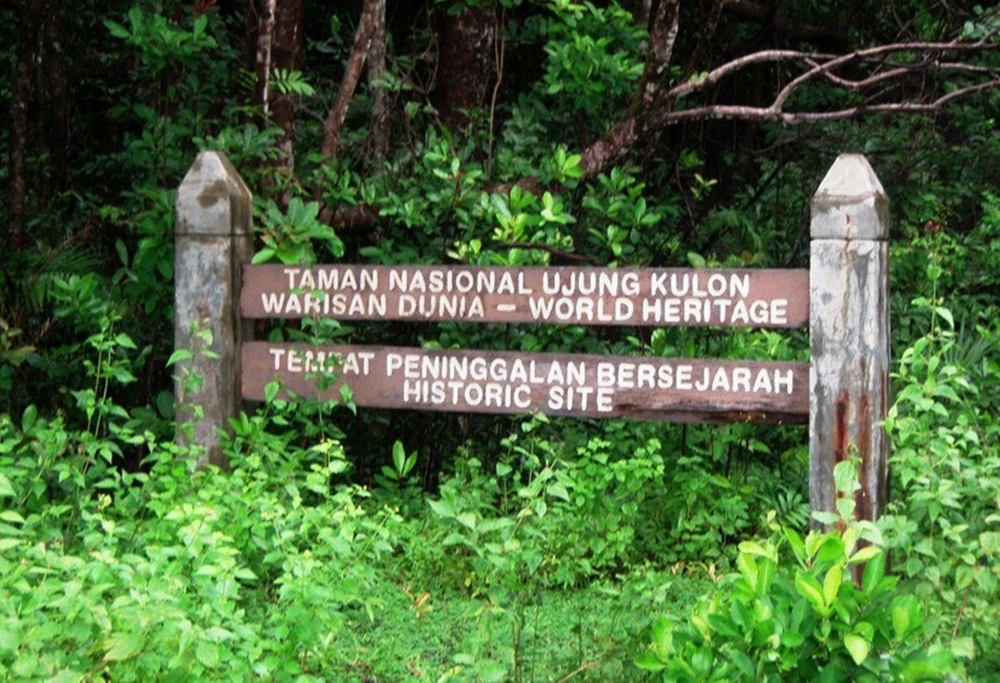

Terletak di ujung barat Pulau Jawa, Pandeglang adalah permata tersembunyi yang menyimpan sejuta pesona alam dan budaya. Dikenal sebagai “surga tersembunyi”, Pandeglang menawarkan keindahan yang belum banyak tersentuh, mulai dari pantai berpasir putih yang menawan, perairan jernih di Taman Nasional Ujung Kulon, hingga pesona Gunung Karang yang menjulang megah.
Surga pasir putih yang berbisik lembut oleh ombak, mengundang jiwa untuk tenggelam dalam keheningan alam yang abadi.
Pulau-pulau kecil di Pandeglang, permata tropis yang menyimpan rahasia bawah laut penuh warna dan kehidupan yang mempesona.
Gunung dan bukit hijau Pandeglang berdiri megah, menantang para petualang menembus kabut dan menyambut cakrawala tanpa batas.
Benteng kehidupan yang memeluk flora dan fauna dengan harmoni alam yang tiada tara.
Air terjun tersembunyi mengalir deras dengan gemuruh air yang menyejukkan jiwa di tengah rimbunnya pepohonan.

Pandeglang GeoExplore dikembangkan oleh Febi Hasbiani, seorang mahasiswa Sains Informasi Geografi dengan minat besar di bidang Geospasial. Web ini dibuat sebagai media eksplorasi digital untuk memperkenalkan keindahan dan potensi Kabupaten Pandeglang kepada masyarakat luas, melalui pendekatan peta interaktif dan informasi spasial.
“Membawa peta lebih dari sekadar arah – tapi menjadi jendela untuk mengenal dan menghargai daerah kita sendiri.”
🖂 Email: febihas02@gmail.com
🅾 Instagram: @febiihasbiani
𖥔 Alamat Jl. Dr. Setiabudi No.229, Isola, Kec. Sukasari, Kota Bandung